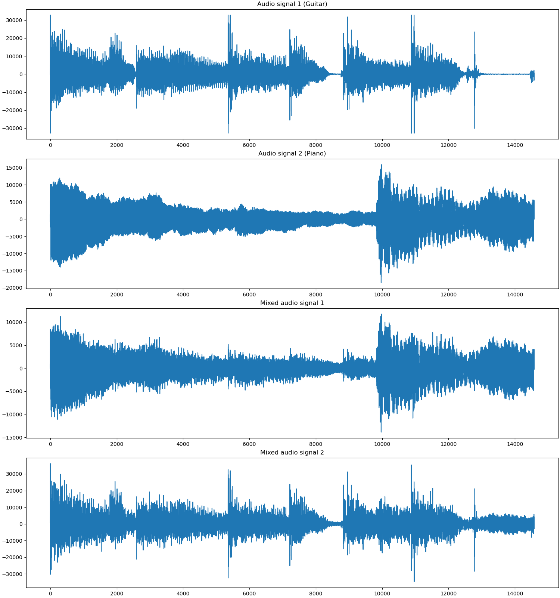
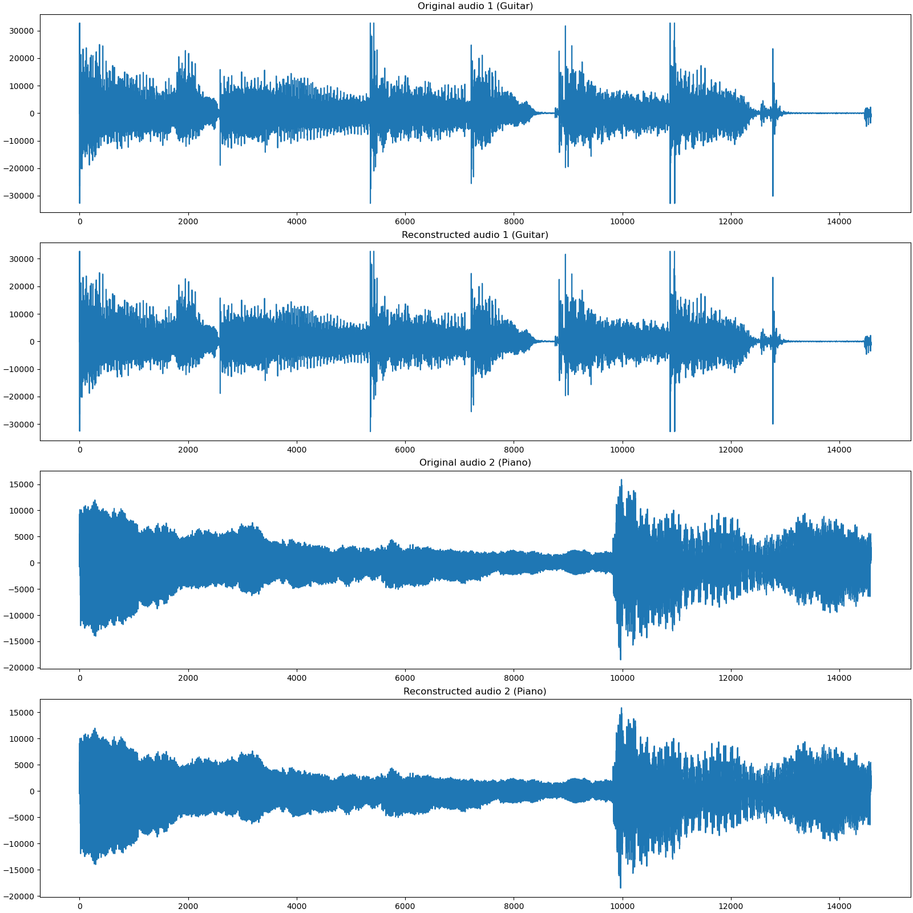

Note
Go to the end to download the full example code
Source Separation I¶
In audio signal processing, source separation is the process of isolating individual sounds in an auditory mixture of multiple sounds.
Modeling the Source Separation Problem¶
In this example we consider the problem of separating two sources which have been mixed together. One is the sound of a guitar, and another is the sound of piano. The mixture is being sensor from two different places with different mixing weights at each sensor. For each time instant, the mixing process can be described by the equation:
where \(\bu\) is a 2-vector containing one sample each from the guitar and piano sounds and \(\bv\) is a 2-vector containing the samples from the two different listening sensors. The matrix \(\bM\) is a \(2 \times 2\) mixing matrix. The mixing matrix is known to us in this problem.
Assume that the audio has been captured for \(m\) samples. We can put together the source audio in a \(m \times 2\) matrix \(\by\) and the captured audio from the two sensors as a \(m \times 2\) matrix \(\bb\) with the mixing relationship given by
Here the post multiplication by the matrix \(\bM^T\) is equality to processing each row of input \(\by\) by the mixing process to generate a row of output.
The Sensor¶
From the perspective of sparse reconstruction, we treat the mixing process as compressive sampling. Then we can write the mixing equation as the application of a linear operator \(\Phi\):
Beware that this linear operator processes the input \(\by\) row by row to generate the output \(\bb\). Fortunately, the CR-Sparse linear operator architecture allows us to process input data along any axis of choice. By default all linear operators process data column by column, which is akin to a matrix pre-multiplication. However, in this problem, we will use a simple \(2 \times 2\) matrix post-multiplication as our linear operator for representing the sensing process.
An alternative design (as used in SPARCO) would have been to flatten \(\by\) to a vector of length \(2 m\) and then use a \(2 m \times 2 m\) sensing matrix \(\Phi\) (obtained by computing the Kronecker product of \(\bM\) with an identity matrix \(\bI_m\)) to construct a flattened version of \(\bb\). Our post-multiplication version of linear operator is a more efficient implementation.
The Sparsifying Basis¶
To create a suitable sparsifying basis for this signal, we will first consider a forward transform as defined below:
Split the signal into overlapping windows of length \(w\) samples each.
Let the overlap between windows be of \(l = w/2\) samples (50%) overlap.
For the last partial window, pad it with zeros as needed.
Compute the DCT transform of each window.
Concatenate the transforms together to form a representation of the signal.
Let there be \(b\) such overlapping windows over a signal of length \(m\). Then the shape of this forward transform operator is \(w b \times m\).
We define the adjoint (transpose) of the above forward transform as the Windowed Discrete Cosine Basis for our music sounds. We denote this basis by \(\Psi\). The representation equation is given by
Here \(\bx\) is an \(w b \times 2\) representation matrix where each column is a representation of each column in \(\by\). In other words, the first column of \(\bx\) is a \(wb\) length representation of the guitar signal and the second column is the representation of the piano signal. This is an overcomplete basis (processing input data column by column). Note that by design, each column of \(\Psi\) is unit length.
CR-Sparse includes an operator called windowed_op which can
transform any linear operator \(T\) into a windowed operator
as per description above. Starting from the cosine_basis
operator, we construct our sparsifying basis \(\Psi\)
using windowed_op. In particular we will be using
512 length windows with overlaps of 256 samples.
The details of the construction of the sensing operator
and the sparsifying basis can be seen in the prob401.py
file in the source code.
The Sparse Recovery Problem¶
We now combine the operators \(\Phi\) and \(\Psi\) to construct the operator \(\bA = \Phi \Psi\) and form the linear equation:
We can now use a suitable sparse recovery algorithm to recover \(\bx\) from \(\bb\). We shall do that using SPGL1 (Spectral Gradient Descent for L1) in this example.
See also:
# Configure JAX to work with 64-bit floating point precision.
from jax.config import config
config.update("jax_enable_x64", True)
import jax.numpy as jnp
import cr.nimble as crn
import cr.sparse as crs
import cr.sparse.plots as crplot
Setup¶
We shall construct our test signal and dictionary using our test problems module.
Downloading sparco_prob401_Guitar.wav
Download complete for sparco_prob401_Guitar.wav
Downloading sparco_prob401_Piano.wav
Download complete for sparco_prob401_Piano.wav
Let us access the relevant parts of our test problem
# The sparsifying basis linear operator
Psi = prob.Psi
# The combined operator for the linear equation :math:`\bb = \bA \bx`
A = prob.A
# Mixture signals
b0 = prob.b
# Original signals
y0 = prob.y
# The sparse representation of the signal in the dictionary
x0 = prob.x
Sparse Reconstruction using SPGL1¶
The shape of mixed signal
14583 2 14583 28672
Run SPGL1 algorithm
import cr.sparse.cvx.spgl1 as crspgl1
sigma=0.
options = crspgl1.SPGL1Options(max_iters=300)
tracker = crs.ProgressTracker(every=10)
sol = crspgl1.solve_bpic_from_jit(A, b0, sigma,
x_init, options=options, tracker=tracker)
[10] x_norm: 2.97e+05, r_norm: 4.45e+05
[20] x_norm: 4.58e+05, r_norm: 1.69e+05
[30] x_norm: 4.97e+05, r_norm: 1.56e+05
[40] x_norm: 5.54e+05, r_norm: 4.39e+04
[50] x_norm: 5.55e+05, r_norm: 3.79e+04
[60] x_norm: 5.56e+05, r_norm: 3.75e+04
[70] x_norm: 5.57e+05, r_norm: 3.73e+04
[80] x_norm: 5.66e+05, r_norm: 2.18e+04
[90] x_norm: 5.69e+05, r_norm: 9.22e+03
[100] x_norm: 5.70e+05, r_norm: 8.65e+03
[110] x_norm: 5.70e+05, r_norm: 8.37e+03
[120] x_norm: 5.70e+05, r_norm: 8.31e+03
[130] x_norm: 5.70e+05, r_norm: 8.26e+03
[140] x_norm: 5.70e+05, r_norm: 8.22e+03
[150] x_norm: 5.70e+05, r_norm: 8.18e+03
[160] x_norm: 5.72e+05, r_norm: 4.90e+03
[170] x_norm: 5.72e+05, r_norm: 4.70e+03
[180] x_norm: 5.72e+05, r_norm: 4.66e+03
[190] x_norm: 5.72e+05, r_norm: 4.64e+03
[200] x_norm: 5.72e+05, r_norm: 4.63e+03
[210] x_norm: 5.72e+05, r_norm: 4.59e+03
[220] x_norm: 5.73e+05, r_norm: 1.54e+03
[230] x_norm: 5.74e+05, r_norm: 1.09e+03
[240] x_norm: 5.74e+05, r_norm: 9.82e+02
[250] x_norm: 5.74e+05, r_norm: 9.42e+02
[260] x_norm: 5.74e+05, r_norm: 9.19e+02
[270] x_norm: 5.74e+05, r_norm: 9.07e+02
[280] x_norm: 5.74e+05, r_norm: 8.97e+02
[290] x_norm: 5.74e+05, r_norm: 8.79e+02
[300] x_norm: 5.74e+05, r_norm: 8.71e+02
Algorithm converged in 300 iterations.
Let us check the quality of reconstruction
problems.analyze_solution(prob, sol)
m: 2, n: 28672
b_norm: original: 677817.092 reconstruction: 677610.672 SNR: 57.82 dB
y_norm: original: 677851.111 reconstruction: 677371.277 SNR: 51.85 dB
Iterations: 300 n_times: 461, n_trans: 301
Let’s plot the progress of SPGL1 over different iterations
The estimated sparse representation
x = sol.x
Let us reconstruct the signal from this sparse representation
y = prob.reconstruct(x)
# Compare the original
snr = crn.signal_noise_ratio(y0, y)
print(f'SNR: {snr:.2f} dB')
SNR: 51.85 dB
Let us visually compare original signal with the reconstructed one
Text(0.5, 1.0, 'Reconstructed audio 2 (Piano)')
Total running time of the script: (0 minutes 19.359 seconds)